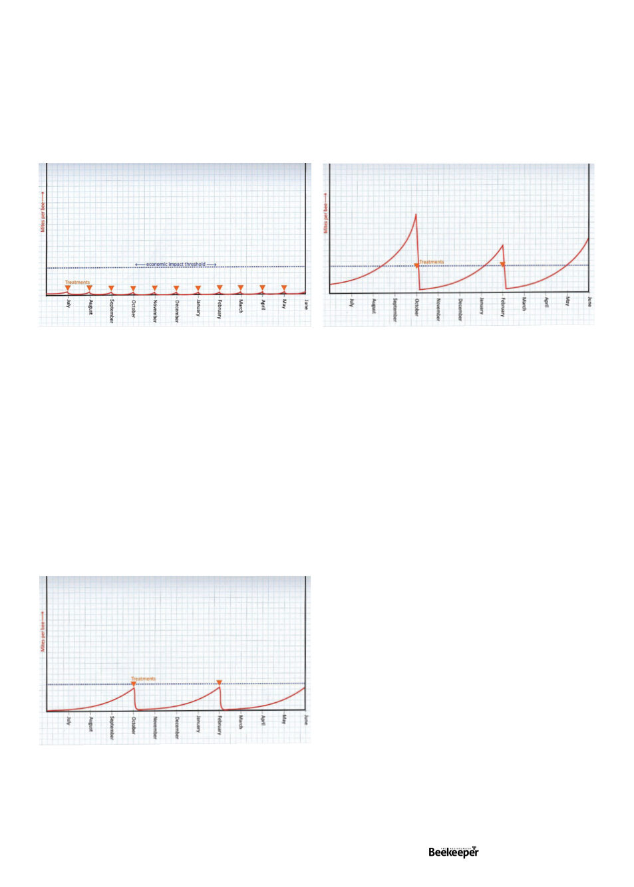

So as you can see, the mite population if left unchecked
can quickly get completely out of control, which causes the
hive to eventually collapse. Yes this graph has no actual
numbers to it because it’s just to illustrate the idea of the
lines. Ignore that blue line for the moment. Okay, so we
don’t want mites, obviously. There are various treatments
that can really hammer them. So let’s hammer the heck out
of them so their population can’t even get offthe ground. If
we put that on a chart that might look something like this:
Okay we’re hammering them once a month, and that
population is going nowhere. Are we and our bees very
happy with this? Well there’s a problem, with most
treatments costing $13-$16 a treatment1, we’ve just
spent $156-$168 per hive on treatment, to say nothing
of our time, and none of these treatments are really great
for our bees, honey, or wax2, so we’ve perhaps gone
a little bit overboard with both the spending and the
chemical usage. So what’s the happy medium?
And that’s where the blue line I’ve drawn here comes
in. The people who crunch numbers on these things have
determined that this is the “economic injury” threshold.
That is to say, if the mite numbers get higher than that line
they will cause more economic damage (loss of revenue
from lost honey production, costs of replacing hives,
etc) than if you treated the pest right at or before that
line. This is the basis of “Integrated Pest Management”--
solving your problem at the minimum cost.
The super simplified graph now looks like this. For probably
somewhere between 2 and 4 treatments per year you can keep
your actual “economic injury” from the mites to a minimum. I
say 2 to 4 because there’s still a great deal that’s unknown about
the efficacies of our treatments, the resilience of our bees and
the speed at which mites will build up in our hives (we can’t just
calculate based on their reproduction rate because especially in
this initial “acute” stage of the spread there will be a significant
in-flow of mites from infested feral hives around us, coming
into our hives via bee drift, robbing or even mites hitchhiking
at flowers.
And we can’t just take a wild guess at when the best time
to treat would be, because for example here is what happens
with the exact same curves as the above chart, but with the
treatments timed wrong:
As you can see, with treatments in the same place, but with
even slightly different mite population dynamics it can easily
once again end up in the area where it’s causing you too much
economic harm.
And so how do you know when to do the treatments? That
is why mite checks (via sugar shake, alcohol wash, or soapy
water wash) are so important. I know people are sometimes
slow to learn a new thing if they don’t feel like they have to yet,
especially when they lack the tool, but trust me, it’s easy and
more than “worth it” – it’s essential if you’re going to continue
in beekeeping with Varroa. One can either make one oneself
(see Dr Anna Carrucan’s instructions in last issue of the ABK),
or most beekeeping supply stores should sell them. Learning
how will take just a few minutes and may be some of the most
valuable five minutes of education you’ll spend on anything.
The recommended frequency of monitoring and amount
of hives to check varies by state so check your state’s
recommendations. The current recommendation from NSW
DPI is to monitor mites at least four times a year, at least once
every 16 weeks3 (4 months), but it is commonly recommended
if you are in an area where varroa is already present you check
much much more frequently, in the area of once every 3-4
weeks4. It is generally recommended that when you check, if
you have ten or less hives you check all of them, if more than
ten you check whichever is the larger number of either ten
hives or ten percent (but again, some jurisdictions may have
more specific requirements). A common practice is actually to
check some of your hives every time you’re out at the bees so
the total adds up to the requirement, for example 2 or 3 hives
once a week so it’s ten every four weeks. That way you’re not
having to do many all at once and always getting a snapshot
of mite levels.
While you’re in an area where mites are not yet known to
be present the purpose of your mite checks are to detect if
there’s any at all, and it will be particularly important to log
your results with the relevant authority. Especially if you are
in a state not yet known to have the mite at all you should
be sure not to dump out the wash if you find mites, as your
apiary department will want to confirm the finding.
Vol. 126 | No. 02 |
Celebrating 125 years | 25